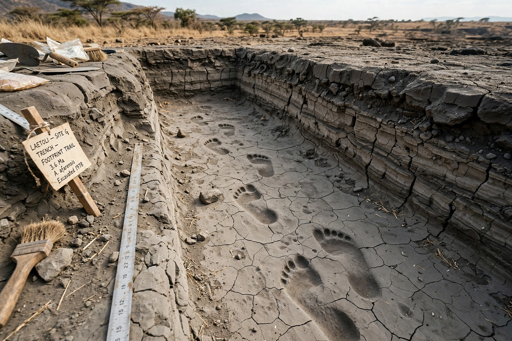

| Laetoli footprints | |
|---|---|
 | |
| Location | Laetoli, Ngorongoro Conservation Area, Tanzania |
| Age | about 3.66 million years |
| Discovered | 1976–1978, Mary Leakey's expedition |
| Attributed to | Australopithecus afarensis |
The Laetoli footprints are trails of hominin footprints preserved in volcanic ash at Laetoli in northern Tanzania, dated to about 3.66 million years ago. They are the earliest unmistakable evidence of habitual bipedal walking in the human lineage: the prints show a non-divergent big toe, a developed arch and heel-strike gait closely resembling that of modern humans, in creatures whose kindred fossils (Australopithecus afarensis, the species of "Lucy") still retained climbing adaptations.
Fossil animal tracks at Laetoli were noticed in the 1930s, but the hominin trails were found in 1976 when members of Mary Leakey's expedition, joking around with elephant dung, stumbled on an extraordinarily rich footprint surface. Excavation in 1978 exposed Site G: two parallel trails, some 27 metres long, apparently made by two individuals walking side by side — a smaller footprint set partially overprinted by a larger one, with a third individual possibly stepping in the same prints. Further trails (Site S), announced in 2016, included an individual estimated at about 165 cm tall, the largest known A. afarensis.
The prints formed when ash from the Sadiman volcano was dampened by rain, walked over, and then buried by further ash falls that hardened like cement. To protect them, the Site G trail was reburied in 1995 under a protective layer with an interpretive display nearby; a museum at Laetoli has long been debated to display casts and the originals safely.